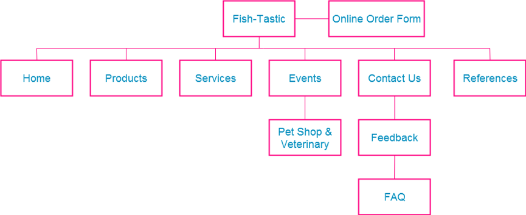

Members:CHEN TUO(13055768), YANG YU QING(13364872), LI YI XUAN (13274164)
The Fish-Tastic website is intended to increase the revenue for this aquarium supplier by promoting the existing and new business that developed. It intends to see an increase in the number of residential and corporate customers attending the classes for setting up landscapes and koi ponds and the number of fish and puppies sold every week.
As well as conducting other promotional activities and keep profits, online feedback form and FAQ are our way to evaluate whether the increase in sales is attributed to the new website. After 3 months, we count the profits and increase the number of fish and puppies sold to the previous months.
The website mainly targets at young families with a child who emphasis on relax values of life. They are from high to middle class and intend to both online shopping and physical stores. The site will be specifically designed towards children. It boosts the appeal to this age group by using imagery and colorful fonts.
Home Page
Online order form:
Products:
Services page:
Events (landscaping):
Contact us:
References:
